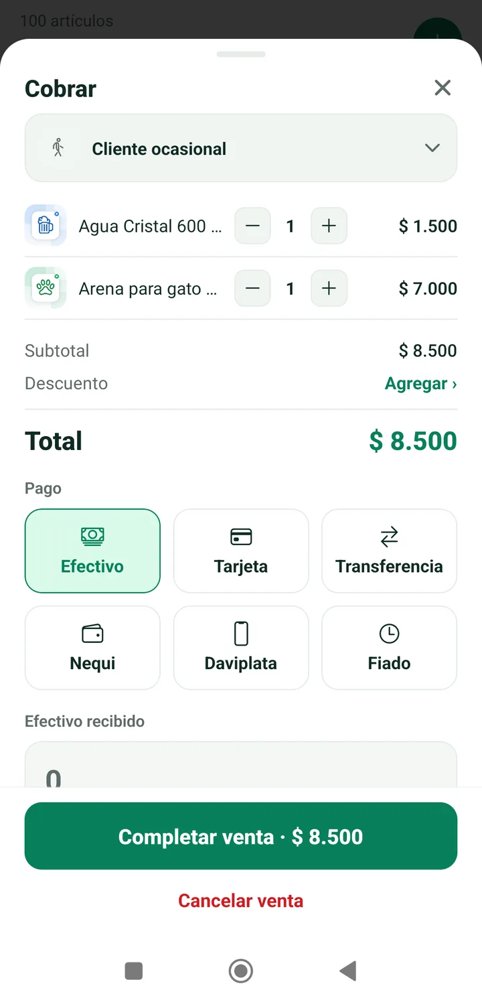
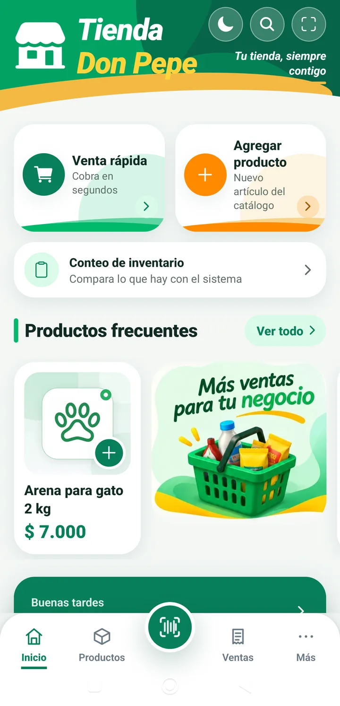
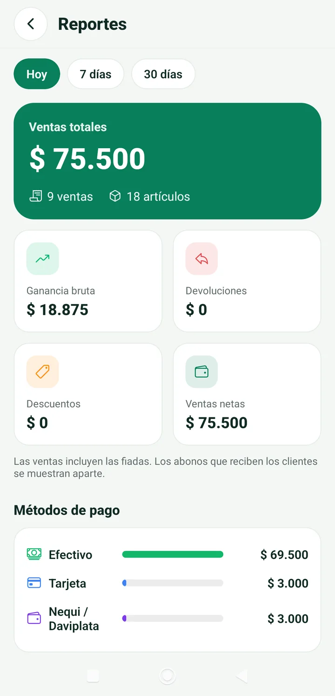
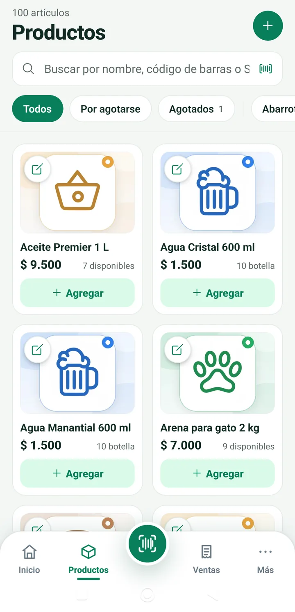

“Fío y luego no sé quién me debe.”
Cada fiado queda en la cuenta del cliente. Registras abonos y se lo recuerdas por WhatsApp.
Gratis · Sin internet · Para tiendas de Colombia
Vende, fía y cuadra la caja desde tu celular, aunque se caiga el internet. Un punto de venta gratis, en pesos y pensado para la tienda de barrio.
Se instala desde un archivo (APK), no desde Play Store. Si Android te muestra un aviso, es normal: te explicamos qué hacer.


¿Te suena?
Son las cuentas que más tiempo le quitan a un tendero. Surtivox las hace por ti.
Cada fiado queda en la cuenta del cliente. Registras abonos y se lo recuerdas por WhatsApp.
Ves cuánto vendiste, cuánto ganaste y cuánto entró por cada medio de pago.
Cada venta descuenta las unidades sola y la app te avisa qué se está acabando.
Surtivox no necesita señal para vender: todo se guarda en tu teléfono.
Lo que hace por ti
Eliges el medio de pago y la app calcula el cambio y guarda la venta, aunque no tengas señal.
Mira cuánto vendiste y cuánto ganaste hoy, en los últimos 7 días o en los últimos 30.

Cada venta descuenta las unidades sola. Tú solo miras qué se está acabando.

El fiado, sin cuaderno
El fiado es confianza, pero la cuenta debe estar clara. Surtivox lleva el saldo de cada cliente y no te deja registrar un abono mayor que la deuda.
Eliges “Fiado” al cobrar y la venta se carga a la cuenta de tu cliente.
Cuando pague algo, lo anotas. El saldo se actualiza solo.
Un toque y se abre WhatsApp con el mensaje listo para tu cliente.
Con ventaja
Ninguna cambia tus ventas ni tus precios: solo te dan información.
Mira cuánto cuesta un producto en Éxito, Jumbo y Olímpica, según lo que publican en sus tiendas en línea. Se busca por código de barras.
Escaneas un producto nuevo y, si otros tenderos ya lo registraron, el nombre aparece solo. Si quieres, tú también ayudas.
Éxito, Jumbo y Olímpica son marcas de sus respectivos dueños. Surtivox no tiene relación con ellas.
Hecho para tu tienda
Tranquilidad
Sin cuenta ni registro, y sin enviar tu negocio a ninguna parte si no quieres.
Ventas, productos y clientes se guardan en el celular.
Un respaldo opcional. Hoy es gratis, en versión de pruebas.
Un kit de 8 palabras, que guardas en papel, la recupera si pierdes el teléfono.
Cada persona de tu equipo entra con su PIN y su rol.
Sin tienda de aplicaciones
Se baja directo desde GitHub, sin pasar por ninguna tienda de aplicaciones.
Android te pedirá permiso para instalar desde tu navegador. Acéptalo solo para esta vez.
Crea tu tienda con el nombre de tu negocio. Puedes cargar un catálogo de ejemplo para probar.
¿Tu navegador dice que el archivo puede ser dañino? Es un aviso común con cualquier APK. Toca “Conservar” o “Descargar de todos modos”, según tu navegador.
¿Llegó al 100 % y no se abrió? Abre la notificación de la descarga o busca el archivo en Descargas.
Antes de instalarlo
Lo que suelen preguntar antes de probar Surtivox en una tienda real.
Nada. Vender, fiar, llevar el inventario y ver tus reportes es gratis y funciona sin internet. El respaldo en la nube es opcional y hoy es gratis, en versión de pruebas: puede cambiar.
No. Ventas, productos, fiados, caja y reportes funcionan en tu teléfono, sin conexión. El internet solo se usa para funciones extra, como el respaldo en la nube, los precios de referencia, buscar el nombre de un producto nuevo o avisarte de una versión nueva.
En tu teléfono. Si activas el respaldo en la nube, que es opcional, se guarda además una copia de tu tienda, con ventas, productos y clientes, en nuestro servidor.
El archivo viene del release oficial del repositorio de Surtivox en GitHub, no de un tercero. Android te avisa porque no viene de Play Store, pero puedes comprobar la versión y la fecha en la página de releases.
Todavía no está en Google Play: por ahora la descarga es directa desde GitHub. Y la descarga publicada es solo para Android, no sirve en iPhone.
Sí. Cada tienda tiene sus propios productos, ventas, personal y recibos, todo en el mismo teléfono.
Puedes guardar copias de seguridad en tu teléfono y llevarlas a otro equipo, o activar el respaldo en la nube y recuperar tu tienda con tu kit de recuperación de 8 palabras. Guárdalo en papel, fuera del teléfono.
No. Los recibos de Surtivox son comprobantes de venta para tu cliente; la app no emite factura electrónica ante la DIAN.
Descarga el APK más reciente e instálalo encima: tus datos se conservan. La app también te avisa cuando hay una versión nueva.
Desde GitHub Issues. Si puedes, adjunta el informe de la pantalla Diagnóstico de la app, en Más.
Es hora de dejar el cuaderno
Gratis, en pesos y sin cuenta. Se instala en un minuto y funciona sin conexión.
Google Play: próximamente